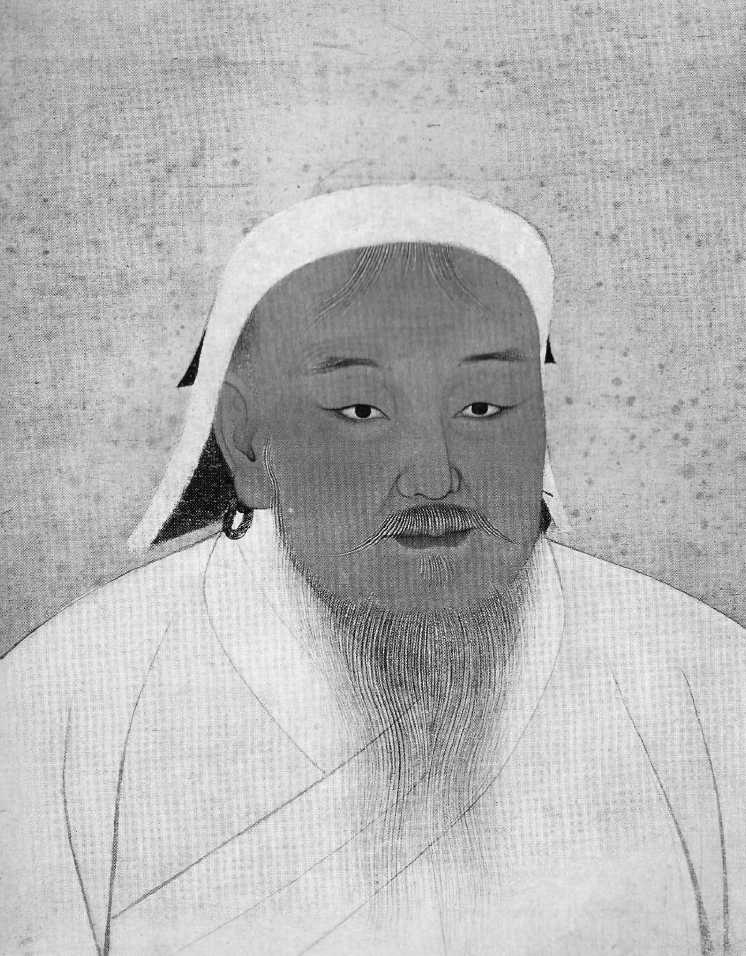

在突厥人成为伊斯兰世界的统治者的同时，遥远的蒙古，有位不引人注目的首领正在开始他的征服生涯；这一征服最终导致了历史上最大的帝国的形成。成吉思汗（也可拼成Chinggis、Chingis、Jenghiz等），原名铁木真，生于1162年，是一个较小部落首领的儿子。铁木真9岁时父亲中毒身亡，结果，这位未来大汗的童年生活非常悲惨。铁木真精通部落政治这门复杂的艺术，除了自身的勇猛外，还兼具忠诚、狡猾和无情的背叛这些不同的品性；正是由于这一点，他能克服早年的低下地位，在转而反对自己的首领并消灭所有对手之后，最后能将操蒙古语的不同部落统一在一起。1206年，在蒙古各部落酋长会议上，他被推举为全蒙古大汗，得尊号成吉思汗，意为“世界的统治者”。
现在，他能够满足野蛮的游牧民族的征服和掠夺欲望。据说他曾说过：“人类最大的幸福在胜利之中：征服你的敌人，追逐他们，夺取他们的财产，使他们的爱人流泪，骑他们的马，拥抱他们的妻子和女儿。”在这方面，成吉思汗与在他之前的草原征服者们没有任何区别。那么，为什么只有他注定成为欧亚大陆绝大部分地区的统治者呢？这个问题特别令人感兴趣，因为，作为一个蒙古人，成吉思汗没有其他游牧征服者——主要是突厥人——所拥有的人力资源。蒙古各部落男女老少加在一起不过100万人，这最多只能为他提供12.5万名军人。以如此有限的兵力，他怎能成为近乎名副其实的“世界的统治者”呢？

图82 元太祖像（台北“故宫博物院”藏）。
成吉思汗首先靠的是所有游牧武士都具备的一个内在优势——即他们的日常生活其实就是一系列战斗行动的不断演习。这些武士身穿毛皮衣服，外备新马作为补充，能在极少休息、进餐的情况下骑马连续行军几天几夜。他们将“闪电战”引入13世纪的世界。据说，他们在匈牙利平原作战时，三天走了270英里。他们用皮袋装水；皮袋没有水时，又能充气供游泳渡河时使用。他们通常靠农村供养，不过必要时，也喝马血、马奶。从小学到的打猎技术，使他们能控制长距离飞奔的马群。蒙古人最喜欢的战术是假装溃逃，诱使敌人一连好几天追逐他们，结果只能是受骗中计，遭到伏击、全军覆没。其他战略战术还有：将树枝拴在马尾巴上，扬起灰尘，或者让假人骑在多余的马上，给人以大部队在行军的假象。
蒙古人最基本的武器是大型混合弓，这种弓比英国人的长弓更具杀伤力，其穿甲箭能在600英尺内杀死敌人。这是蒙古骑兵使用的一种可怕的武器；他们能在骑马飞奔时射出所配备的30支箭。其他装备包括钢盔、轻便兽皮盔甲、马刀，有时还有一支带挂钩的长矛和一把钉头锤。蒙古马仅在空旷的牧区吃草，漫长的严冬里没有避寒之地，也没有干草或谷物作为补充饲料。这使它们虽然体格不很高大，但却非常能吃苦，且适应性强。成吉思汗还进一步用多半从汉人那里学来的新技术和新装备来加强自己的军队。因此，成吉思汗为无与伦比的骑兵射手增加了攻城武器；这种武器在攻占带有防御工事的城市时，是必不可少的。
蒙古人还是从事间谍活动和心理战的能手。战前，他们尽量收集有关敌人的道路、河流、防御工事、政治和经济状况等方面的情报。他们还派间谍散布蒙古势力强大，任何抵抗都无济于事的谣言，使敌人士气低落。战斗中，他们采用恐怖战术，以削弱敌人的士气。他们强迫战俘站在队伍前列向自己人进攻，而且攻城时稍遇抵抗，便将全城居民屠杀殆尽。
即使拥有军事天才和最佳的战争机器，如果不是恰好出现在适当的历史关头，成吉思汗也不可能成为世界的征服者。若在汉朝或唐朝，统一强大的中国可以轻而易举地制止他；最强盛时期的穆斯林阿拉伯人也能阻止他。但是，13世纪初期，欧亚大陆的力量对比却完全不同了。中国这时已分成三个小国：统治北方的金朝、控制南方的宋朝和党项人建立在西北的西夏王朝。中国的西面，是建立在绿洲城市如布哈拉和撒马尔罕的基础上的喀拉汗国；喀拉汗国西边，奥克苏斯河畔，是穆斯林王国花剌子模，再往西就是巴格达的阿拔斯王朝。但是，花剌子模和阿拔斯王朝这时均处于衰落时期。
1205年至1209年，成吉思汗首先征服了西夏，迫使它成为附庸国。1211年他进攻中国的北方，占领了长城以北地区，然后于1213年，突破长城防线，进入黄河流域。到1215年，他已劫掠占领了北京，而且得到了那些知道如何围攻城市的中国人和知道怎样开发和管理农业社会的外国人的帮助。按照自己的总体战略，成吉思汗此时转而进攻周围游牧部落的领土。1218年，成吉思汗灭西辽，至此他已接近了花剌子模边境，并于1219年至1221年占领了这个国家。富饶且古老的城市如布哈拉、撒马尔罕和巴尔赫均惨遭抢劫，居民们被大批屠杀，只有熟练工匠幸免于死，被送往蒙古。
与此同时，成吉思汗因西夏反对他的统治而返回蒙古，再次指挥对西夏王朝的战役，并获得胜利。这是他的最后一次战功，不久以后，即1227年，他去世了。遵照遗嘱，他被埋葬在他生前选择的家乡的一棵大树下。为了确保坟墓的位置不被发现，护送尸体到现场的人全被杀害。